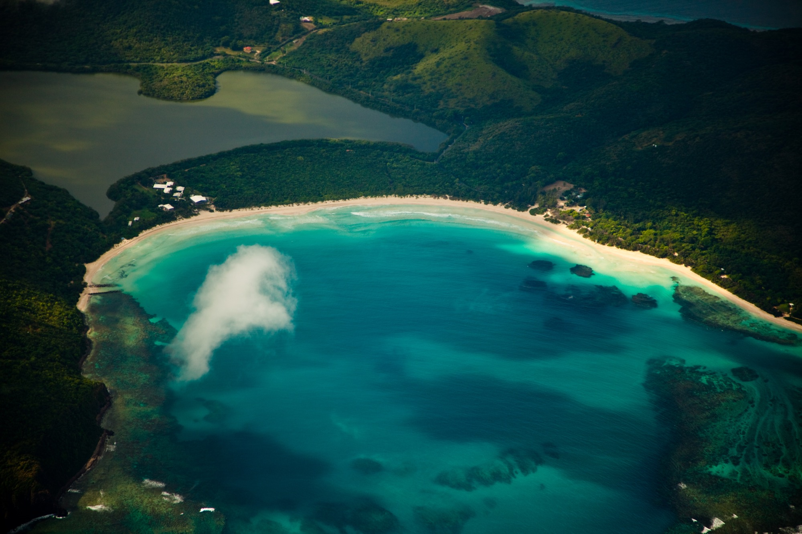

PUERTO RICO, ONE ISLAND AT A TIME
A little closer
to paradise.
Salt in the air. Somewhere new to explore.
Your next island story starts here.
SO MUCH MORE THAN A PIN ON A MAP
Find your kind
of island time.
For the beach wanderers, the adventure seekers, and everyone who’s ever said “one more day.” Explore Puerto Rico through Islas de PR, then turn that saved-post daydream into a plan.
FOR YOUR BEACH-DAY DAYDREAMS
Meet Culebra.
Make room for turquoise water, slow afternoons, and the beach days you’ll keep coming back to. Start with the Culebra guide or explore the island excursion collection.
Explore island excursions ↗FROM “SOMEDAY” TO “LET’S GO”
Your next adventure.
Recommended collections from Islas de PR.
Find your experience and book with the provider.
CULEBRA & VIEQUES
Chase a different
shade of blue.
Browse island excursions ↗SAN JUAN & THE MAIN ISLAND
Let the island
surprise you.
Browse main island excursions ↗Some links are affiliate links. Islas de PR may earn a commission from qualifying bookings. Availability, pricing, and booking terms are provided by the booking partner.
SAVE THIS FOR YOUR ISLAND ESCAPE
Culebra,
here you come.
Start exploring with the Ultimate Guide to Culebra from Islas de PR. A little inspiration now. A lot of island memories later.
Open the Culebra guide ↗A FEW THINGS BEFORE YOU GO
Good to know.
How do I book an excursion?+
Choose an island or main island collection above. You’ll go to the Islas de PR collection on Viator, where you can compare available experiences, check dates and prices, and complete your booking.
Are bookings handled on this website?+
Bookings are completed with the external booking provider. Review the individual experience’s meeting point, transport arrangements, cancellation policy, and inclusions before booking.
Where can I find more island inspiration?+
Follow @islas_de_pr on Instagram for Puerto Rico content, or explore the full collection of Islas de PR links.